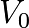
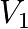

Appendix 1 : Comments about the four economic freedoms
The Relative Theory of Money (RTM) is based on four economic freedoms which it gives meaning. By these comments I wished to deepen the understanding, to anyone who wishes to model his economic and monetary reasoning on them
General remarks :
I noticed since the first release of the RTM in 2010, a statement saying this : « The RTM proposes a monetary system with a Universal Dividend ». This is false and stems from a misunderstanding of the nature of a paradigm. I will explain why.
RTM defines 4 economic freedoms in space-time comprised of individuals with average life expectancy noted « ev ». On this basis, and only due to a coherent reasoning on this basis, the RTM results in universal dividend monetary systems as the only compatible monetary system in this frame of reference, and the demonstration results to a relative value for this dividend as ln(ev/2)/(ev/2), the distance of a monetary system to this demonstrated central value (and not « proposed »), can be qualified of relative distance to a fair money.
It is absolutely not a « proposal », but a coherent demonstration with foundations. This is crucial to understand, because a theorem imply the converse, which is without any doubt the result of the most important of the RTM, which is that monetary systems not conform to this results, are not coherent to this result, are not coherent with the four economic freedoms in human space-time.
By enlightening this perspective, the RTM brings an understanding of the nature of the causes which are the roots of the negation of these freedoms, enabling an understanding of a specific causality which results in effective nuisances like wars, revolutions, insurrections.
While the one who would study the RTM would not come to effective understanding of these crucial points of understanding about causality, he can not estimate to have really understood the the results and conclusions which participate to its nature.
Freedom : The freedom is established as everything an individual can realize in accordance with the non-nuisance to oneself and other, living and futures. This non-nuisance can be defined at a precise point (x, y, z, t) in space-time and has nonetheless properties of evolution or revolution.
One should not understand here freedom as absolutely defined, which would not have any logical sense in terms of coherence. Neither should one understand the opposite excess which would be that freedom would be undefined which is the opposite of what is previously asserted.
Finally, freedoms relating to a monetary system, although being expressed differently, have the same fundamental nature as freedoms related to free softwares. One should really understand there that it is the user who must be free. We then say « free » software or money by convention, but one could also say « enabling users to practice their freedoms », then « free » relatively to human using the object. It is essential to understand this point, because written this way we could have a tendency to think that its a property of the object as it is instead of understanding that it is what the human can do, which is really different.
Freedom 0 : The individual is free to choose his monetary system.
One can only declare the three following economic freedom when he is inside a relativist monetary system, because then he defined which monetary system he already chose. Also, sometimes a relativist can indifferently reference the four economic freedoms or only the three freedoms depending on the case. Thus, the specific number 0 coupled to this primary freedom.
This choice is here extensible to the possibility of modification. This means that not only the individual can choose to use and adopt an independent monetary system, and thus to refer to the principles declared by this other monetary system, but he can also act to evolve the monetary system he uses, in accordance with the rules or general principles which enable this evolution.
Thus it is a double possibility in terms of changing the existing, or the change. This is totally comparable to the life of a software code, which evolves from versions to versions, or which « forks », meaning it is copied and modified by others in a different direction, or also to adopt a totally different software model, having evolved independently since its origin.
This essential freedom is present in several forms experimentally verified, for example the Suiss WIR, the German Chiemgauer, the Local Exchange Trading System « JEU » in Canada, all built following very different rules. Also in time, the change of one monetary system on the basis of physical reference (gold standard) to an immaterial reference (fractional reserve banking).
Freedom 1 : The individual is free to use the resources.
Usage of resources must be conform to the non-nuisance. This means, given individuals using some resources (whatever their nature) that it remains substantive quality resources available, enough for other individuals, or that it exists a compensation because the usage of these resources (whatever it is) do not let other individuals to use it.
Obviously it is not talking here of cases which would be de facto of the order of the nuisance (so by definition of the order of non-freedom) concerning the usage of these resources already identified as harmful.
An historical example among the most commonly understood which reveals this principle is the excess of ownership if not absolute of the lands, limited by nature, which leads to economic area and period where not only the new born individuals can not mechanically become proprietaries because this one resource is not available in the same conditions as their predecessors, and where the compensation for this excess of ownership of ones on this living environment of others does not exist.
This is typically the case of latifundios, feudal societies, absolute monarchies or near-absolutes, or also communists regimes or near-communities where it is the one State which plays the privative role of the first economic freedom, or also corporative regimes where it is private interests groups or State-private alliances who play together this role of freedom privation, to the individuals who are not part of these groups.
The mechanic which leads to the negation of the freedom 1 can totally not be seen at a time, excess of resource appropriation can be the limit of a slow differential process, able to accumulate during half a human lifetime, a lifetime, or even several generations. The economic space considered, coming about this limit, one can find experimentally that irrepressible forces are triggered under the forms of wars, insurrections or revolution, as if we compressed gas until it burst the containing recipient.
Freedom 2 : The individual is free to produce any value.
This freedom is probably the most fundamental of the RTM, because it includes implicitly in its statement the principle of relativity. In the RTM the relativity principle is not only detached from the second freedom only to ease the read and the understanding of these reasonings, for individuals having advanced scientific knowledges, doing an implicit reference to equivalent principles in physics.
For « value » to be, it is necessary that an individual identifies the object by coupling it with this characteristic. This let for sure other individuals absolutely free to not couple it with this characteristic for this one object, or to couple it with a different degree, or also depending on other parameters inexpressible for the others.
Furthermore the object can not exists at all, outside individual spirit. We will talk, a longtime after the production of this one value, of innovation. But to pretend that an innovation could be recognized by other individuals outside the spirit of the one who conceived it as having every characteristics of a value, is not to understand the second freedom twice : at time and relatively to future humans.
This observation is about the freedom of human spirit to express any conceptual model reflection of its own experimental reality. We will have a similar phenomenon in science about mathematics models or physics, which do not have the same qualities nor the same predictive precisions or descriptives, depending on the experimental frame.
Nuisance would be here to think it would be legit for individuals agreeing conceptually between them, to impose their models on other individuals, while nor history, nor the number, are in any way valid standards before the freedom to conceptualize.
It appears, backward this nuisance of a proselyte type, that when a conceptualization of reality enables a better understanding, a better agreement with experimental reality lived by individuals, it has no need to extend by any force or excessive proselytism to be adopted by other individuals.
Living individuals, or new entrant in life space, compare conceptualization with past reasoning and new, and adopt the ones who seems to be the most conform to their understanding, or to their goals, or also to many other modalities which one should not judge.
This is without prejudice to the end of this process of concepts transformation. Neither it is without prejudice to a relevance a priori more precise or less precise between these models concepts. This is not due to the experience and individual choice, which is verified in the whole space-time of past lives. Neither there is here any judgment of value, a priori by default to characterize this freedom.
Economically, about the possibility of a fair money, this principle results to the fact that no basis other than the ones individuals can be coherent with this freedom, or relativity principle.
This money in lieu of account, symmetrical mutual credit is defined on the basis of the ones individuals is the class of general solutions. In this class of general solutions, the individual in space-time is being taken into account, meaning its average life expectancy « ev » allows to established the symmetrical common monetary contract in space-time between all the individuals, resulting thus in under classes of compatible solutions which are the universal dividend monetary systems to which the relative growths are near ln(ev/2)/ (ev/2).
Freedom 3: The individual is free to exchange « in the money ».
Freedom 0 being exerted, the individual can count, estimate, calculate, display, in the monetary unit he chose. Then if these individuals use force on others to do these actions in another units, this freedom does not exist. Or also if the individuals force others to any intermediary exchange before the exchange in the chosen monetary unit, yet again this freedom does not exist.
Also, if individuals pretend to adopt a money, and do not display, do not count, do not estimate, or do not calculate in their own chosen monetary unit, they do not exert this freedom. However one should not that the freedom 3 could exist, the choice of individuals to not exert it is still possible, the situation would be different from the case where this freedom would be violated by forces of coercion.
It is not really difficult in reality to exert the third freedom. Let it be prices, accounts, calculations, display in the given monetary unit, it is very simple, knowing the price of the chosen money in the displayed monetary unit (the exchange rate, which a price like any other), to do the transformation.
Then an individual who would want to display, count, calculate all the price of anything, displayed anywhere, in his own money freely chosen, can apply such a transformation really easily, with the help of a software doing this job if needed.
I must note about this that the relativist money is often badly understood because of the non-understanding of this freedom, yet essential. I was able to hear for example « the relativist monetary mass grows indefinitely », it is true from a quantitative point of view, but it is false from a relativist point of view. From a relativist point of view the money is perfectly finished. I will explain this point so that it is very clear in the reader’s mind.
The relativity principle implies that there is no absolute measure. To begin with, let’s use the example about the speed of an object in Physics. The speed  of an object will be perceived differently depending on the observer 1 which will have a relative speed  or the observer 2 which will have a relative speed  compared to the object. Anyone can easily understand when they experience it that he sees the train motionless when he is within, or moving when he is on the dock, or also with another speed if he is in another train.
compared to the object. Anyone can easily understand when they experience it that he sees the train motionless when he is within, or moving when he is on the dock, or also with another speed if he is in another train.
The frame of reference decides on every measure. And we have the fourth freedom, so we can choose the suitable frame of reference.
If we count in « number of Universal Dividends » and not anymore in the simple « quantitative numbers », we chose a relativist money unit, conform to the chosen monetary system. And this « number of Universal Dividend » is perfectly finished, depending only on the number of individuals (which is conform to the basis). So even if in the quantitative frame of reference (view of the train from the dock) the expansion seems an indisputable fact, if the observer chose the UD himself as the monetary unit (he is then in the train) the monetary mass does not move at all.
A global dividend being for example of 5% of the monetary mass, it is obvious that he can only have at a time « t » a global limit of 20 dividends in the one monetary mass (20 x 5% = 100%). If we reference the N individuals of the monetary area, we will count a universal dividend of 5 % / N and thus a limit of only 20 x N individual dividends in the whole monetary mass, thus a fixed number of units for a stable population constantly renewed.
Then any price, count, calculation, can be realized in UD, it becomes very clear that the idea of expansion or non-expansion is total non-sense and is only the object of a pure convention depending on the strict arbitrary choice of the chosen frame of reference, and thus on the fourth economic freedom. The same applies to the false ideas of « melt » or « non-melt » of the money, which does not exist in a well understood relativist reasoning for the same reason.
One could record briefly this last point, already explained several times in details, that an individual seeing his saved quantitative money units « melt » by monetary expansion, sees also being added to his account his own individual share of new issued money, this simple observation should immediately cause reasoning for the reader who will see really fast by himself that there is a balance sheets to do with what « melted » and what is « added », and not at all any random assertion on this phenomenon.
A similar reasoning will refute the false assertions about « the inflation » (of which the resolution is the equivalent of the theme, also topped from the « melt »). Because the number of UD is limited and the prices being all transformable in UD, this simple choice of frame of reference will make immediately understand to the layman that no source of inflation is possible. However, there are ignorance sources because of the attachment to the quantitative. This ignorance consist of not seeing that in unfair moneys, it is the unsymmetrical monetary creation between men which causes a real problem to the one who do not see the new money issued being added to their account relatively to the one who see the new monetary issuance being integrally added to their own accounts.
The relativist reasoning always come back to its basis which is the coherence with the four economic freedoms. It does absolutely not care of wrong quantitative notions that he knows how to refute easily. His whole attention is focused on the question « this or this monetary system is coherent with the four economic freedoms, relatively to the humans who use it and will use it ?».
The non-understanding of this point is then only about ignorance of this relativist reasoning modes.